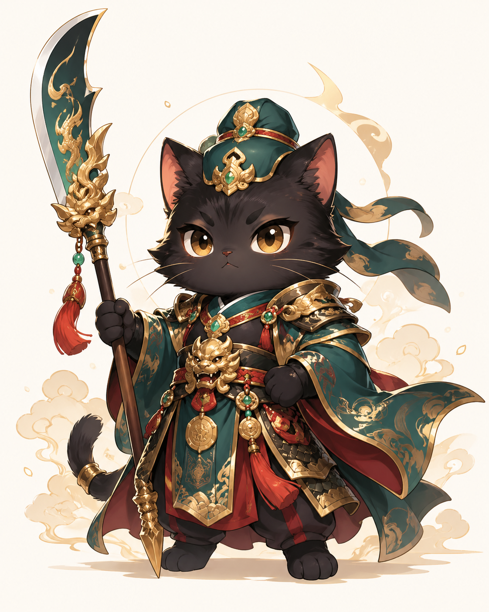
隊長／總關主
青衡
原型：關聖帝君
青衡是喵喵小隊的隊長，也是這次府城任務的總關主。 他負責發布關卡、提醒任務重點，並判定大家是否成功通關。
「府城任務開始，喵喵小隊集合！」
Team
你和家人化身成古風貓貓，一起完成府城闖關任務。 隊長青衡負責發布任務與判定通關，其他隊員負責一起闖關。

原型：關聖帝君
青衡是喵喵小隊的隊長，也是這次府城任務的總關主。 他負責發布關卡、提醒任務重點，並判定大家是否成功通關。
「府城任務開始，喵喵小隊集合！」
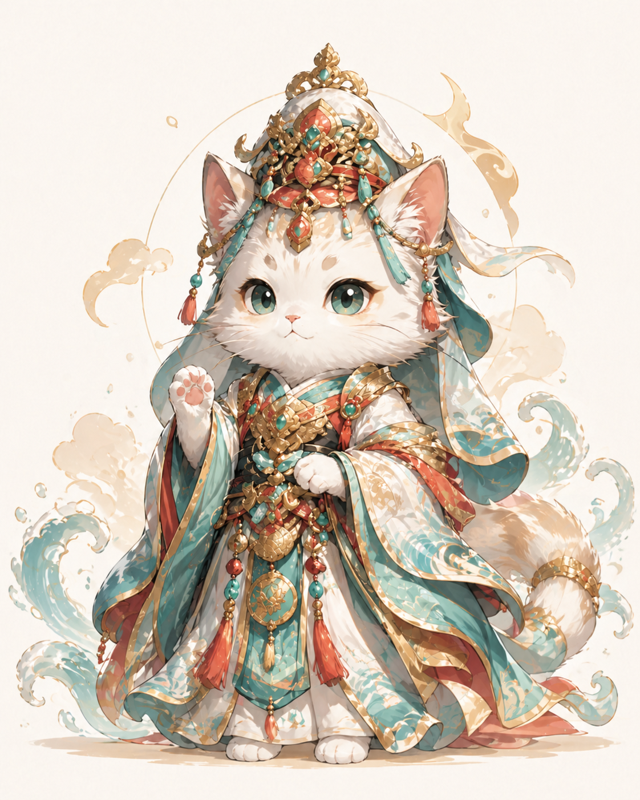
原型：觀音
澄安是喵喵小隊中最溫柔安定的成員，象徵平安、守護與陪伴。 她會和大家一起走完這趟台南旅程。
「大家一起走，就不怕迷路。」
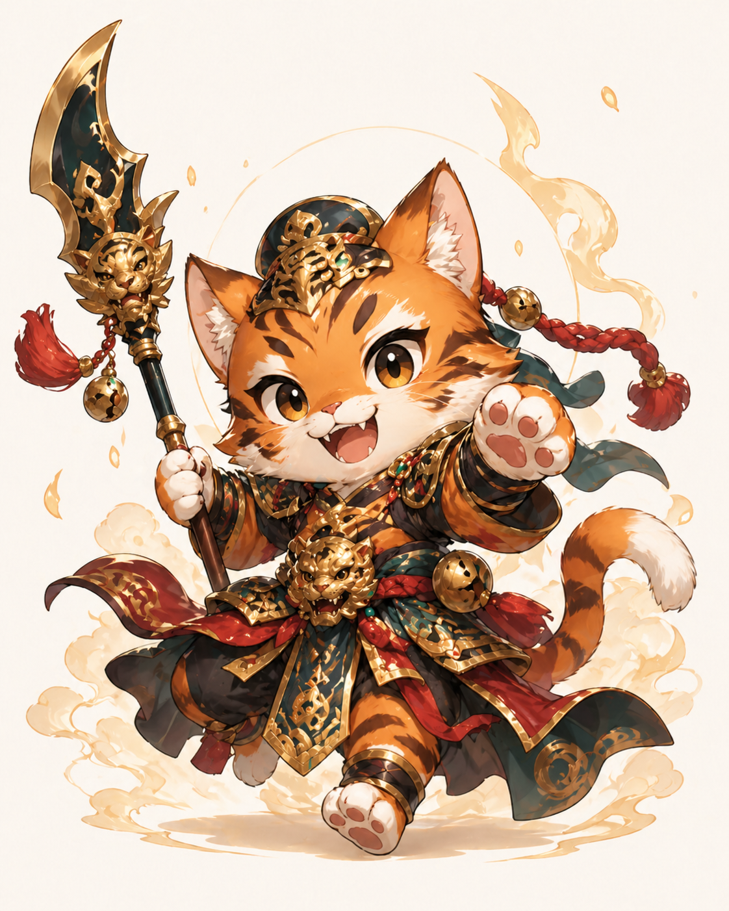
原型：虎爺
景曜是喵喵小隊中最活潑、最好奇的一位。 他帶著虎爺般的勇氣與行動力，總是第一個發現新任務。
「前面一定有新任務！快跟上！」
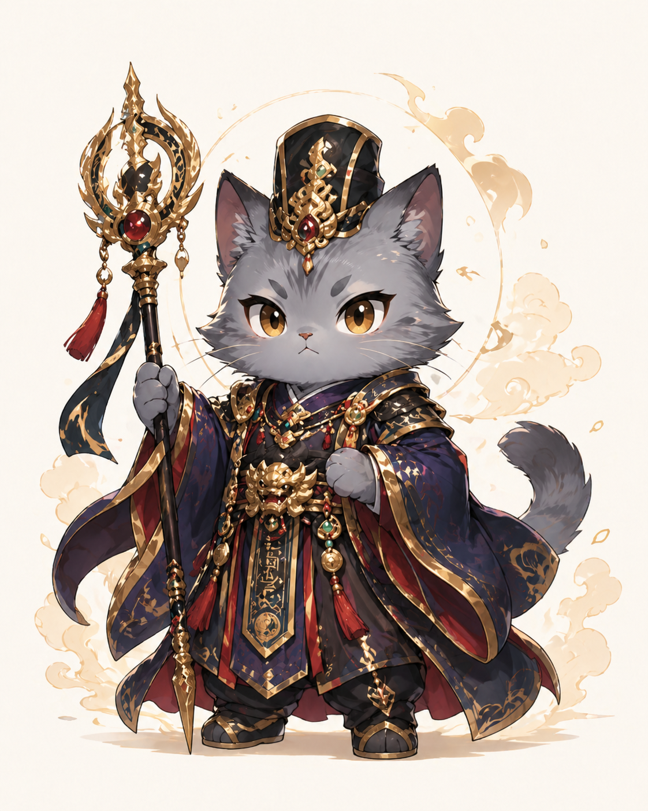
原型：王爺
玄令是喵喵小隊中最有氣場的成員。 他帶著神秘與儀式感，讓這趟旅程更像真正的府城冒險。
「既然任務已開，就一起走到最後吧。」
Mission Info
Day 1
第一天重點任務：臺南孔廟與府城探索。
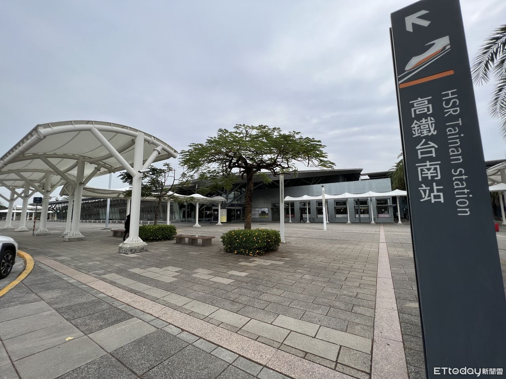
府城任務正式啟動，喵喵小隊準備出發。
抵達台南後，先進行任務補給與行李安置。
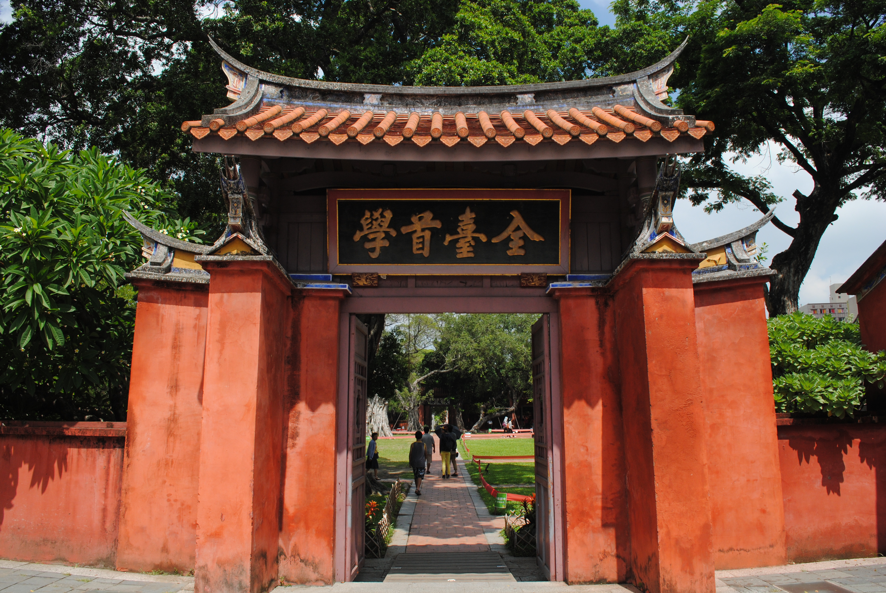
第一關重點景點，聽完介紹後進入孔廟十問。
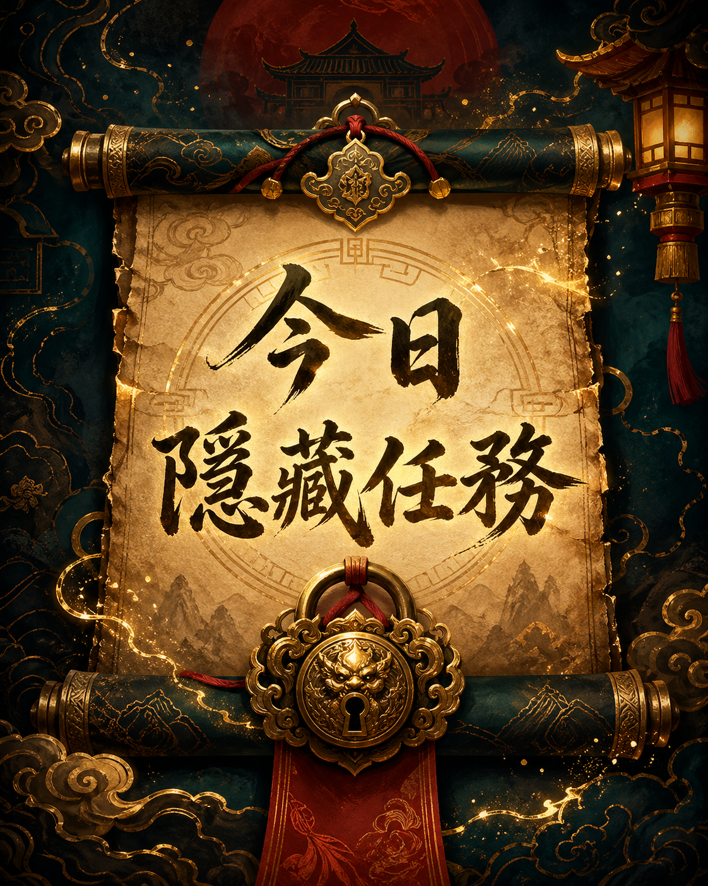
任務尚未解鎖，請跟著行程前進。到達現場後才會揭曉。
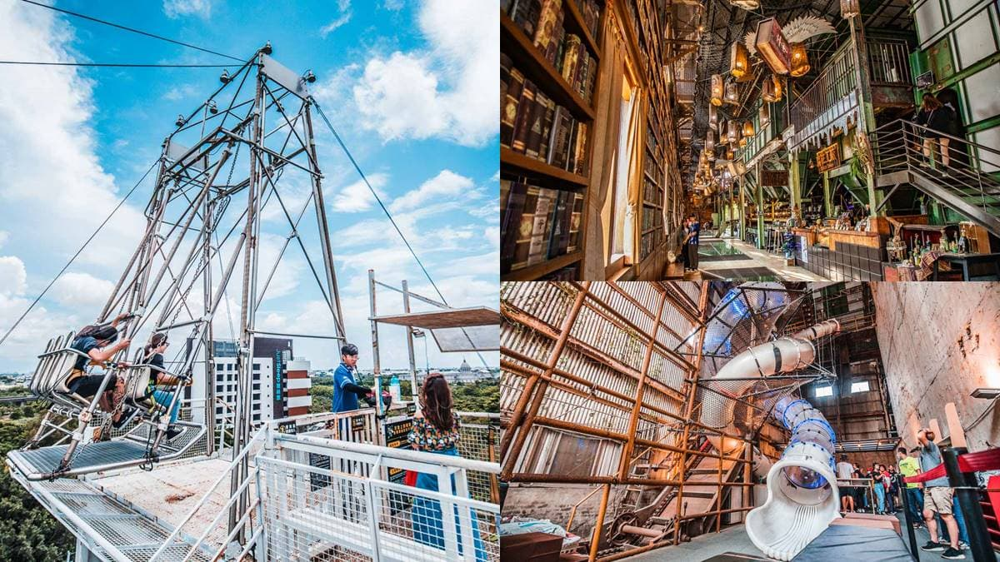
進入充滿工業風與表演能量的文化場域。
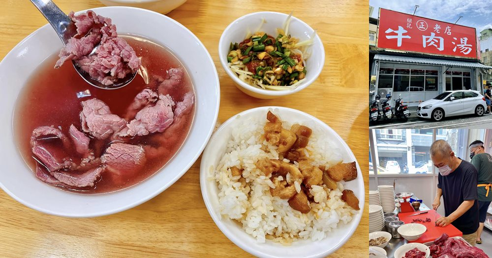
府城美食補給，讓喵喵小隊補充戰力。
第一日任務完成，回到據點休息。
Challenge 01
10 題，每題 10 分，滿分 100 分。此關只結算孔廟分數與孔廟稱號。
青衡：「第一關，孔廟十問開始。請認真聽完介紹，再回答問題。」
Day 2
第二天重點任務：安平古堡與府城歷史線索。
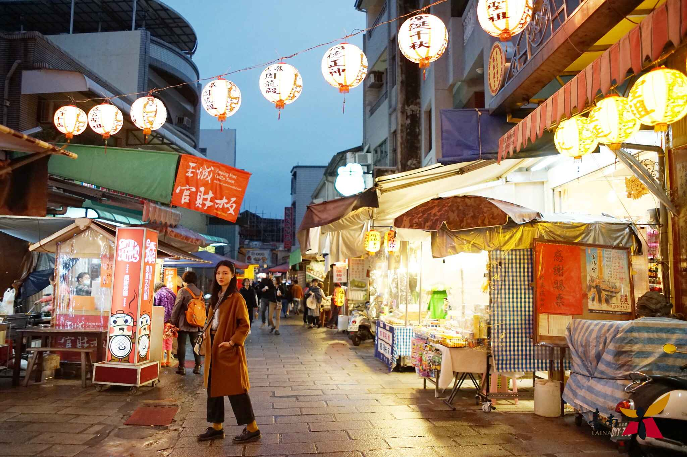
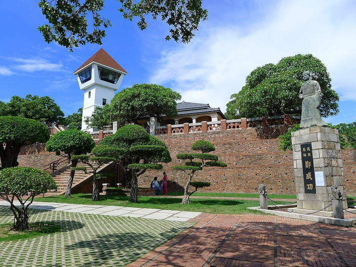
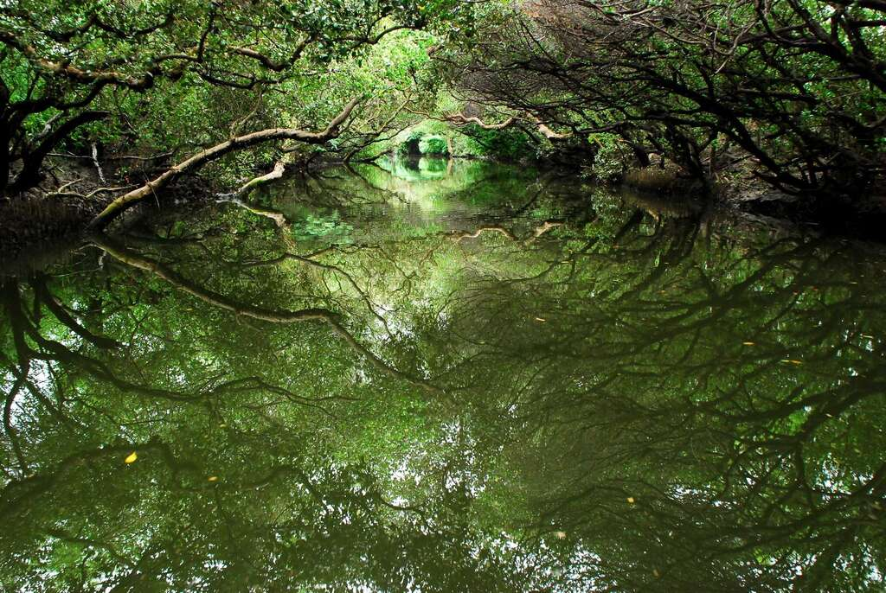
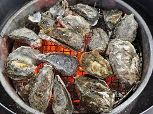
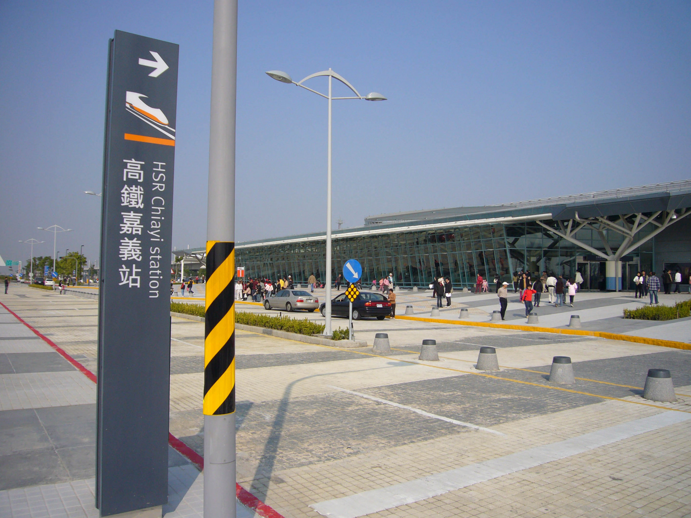
Challenge 02
10 題，每題 10 分，滿分 100 分。此關只結算古堡分數與古堡稱號。
青衡：「第二關，安平古堡十問開始。想通過這關，就要拿出真本事。」
Food Station
美食區不是考題主線，但可以讓網站更有旅行感。
Route Map
用發光路線呈現兩天的任務移動軌跡。